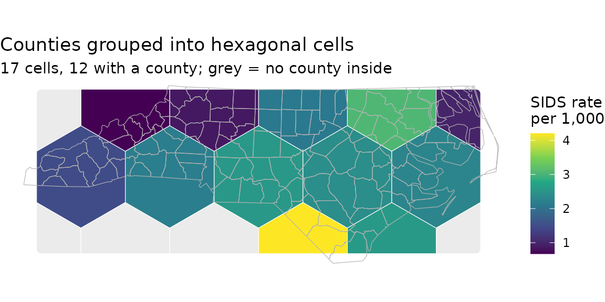

This article covers what leaves your session once the cells and the model are settled: the cells as a file, the values in them, the model’s score with the checks that bound it, and what to save to rerun the analysis.
This article needs two optional packages: ggplot2
for the map and gstat for the autocorrelation range. Where
one is missing, the code that needs it is shown but not run.
The cells as a file someone else can use
The example is North Carolina’s counties, with the 1974 SIDS rate per 1,000 births, and hexagonal cells laid over the county centres rather than the county boundaries.
library(sf)
library(spatialkit)
nc <- st_read(system.file("shape/nc.shp", package = "sf"), quiet = TRUE)
counties <- ensure_projected(nc[, c("NAME", "BIR74", "SID74")])
counties$rate <- 1000 * counties$SID74 / counties$BIR74
centres <- coerce_to_points(counties)
boundary <- clip_target_for(centres, expand = 0.01)
hex <- build_tessellation(centres, method = "hex", approx_n_cells = 12,
boundary = boundary)$cells
nrow(hex)## [1] 17The boundary is the bounding box of the county centres, grown by 1
percent of its longer side (clip_target_for()). Hexagons
over it came out at 17 for a request of 12, so quote the count that
comes back.
Each county goes to the cell it overlaps most
(largest = TRUE, which vignette("cells")
explains), and summarize_by_cell() reduces the counties to
one row per cell. Passing cells_sf keeps the geometry, and
keeps the cells that hold no county with NA values.
grouped <- assign_features_to_polygons(counties, hex,
polygon_id_col = "cell_id",
largest = TRUE)
cells <- summarize_by_cell(grouped, response_var = "rate", id_col = "cell_id",
cells_sf = hex, conf_level = 0.95)
names(cells)## [1] "cell_id" "n"
## [3] "resp_mean_rate" "..sd_resp_rate"
## [5] "..se_resp_rate" "..neff_resp_rate"
## [7] "..df_resp_rate" "..ci_lo_resp_rate"
## [9] "..ci_hi_resp_rate" "cell_weight"
## [11] "..pooled_resp_rate" "..pooled_w_resp_rate"
## [13] "..pooled_target_resp_rate" "geometry"The box also covers ground outside the state, with no county centre,
so 5 of the 17 cells hold no county. With the state outline as
boundary, the same request gives 12 cells, none of them
empty.
library(ggplot2)
ggplot() +
geom_sf(data = cells, aes(fill = resp_mean_rate), colour = "white") +
geom_sf(data = counties, fill = NA, colour = "grey70", linewidth = 0.2) +
scale_fill_viridis_c(name = "SIDS rate\nper 1,000", na.value = "grey92") +
labs(title = "Counties grouped into hexagonal cells",
subtitle = sprintf("%d cells, %d with a county; grey = no county inside",
nrow(cells), sum(!is.na(cells$n)))) +
theme_void()
Is this location inside?
Someone holding the cells may want to know whether a new location
falls in one. assign_features_to_polygons() with
keep_unassigned = TRUE answers that: it returns one row per
location, with NA for a location outside every cell.
sites <- st_as_sf(
data.frame(site = c("Raleigh", "Wilmington", "Atlantic", "Norfolk VA"),
lon = c(-78.64, -77.95, -74.50, -76.29),
lat = c( 35.78, 34.23, 35.00, 36.85)),
coords = c("lon", "lat"), crs = 4326)
inside <- assign_features_to_polygons(sites, cells, polygon_id_col = "cell_id",
keep_unassigned = TRUE)
st_drop_geometry(inside)## site cell_id
## 1 Raleigh 12
## 2 Wilmington 13
## 3 Atlantic NA
## 4 Norfolk VA NA2 of the 4 sites fall inside a cell. The default,
keep_unassigned = FALSE, drops the locations outside every
cell, with a warning, and lists their rows in
attr(, "unassigned")$which. That suits aggregation. For a
membership question keep them, so the answer has one row per location
you asked about.
The sites can stay in lon/lat.
assign_features_to_polygons() moves them into the cells’
CRS for the join and returns them in the CRS they arrived in. A point on
a border two cells share falls in both, and tie_break
decides which one it is recorded in;
?assign_features_to_polygons gives the rules.
IDs that survive a reprojection
The cell_id a tessellation carries is already derived
from the geometry, so it does not change when the input points arrive in
another order. ensure_stable_poly_id() sorts the cells by
the centroid of each, measured in longitude and latitude, and numbers
them in that order. Anyone who runs it on the same set of cells gets the
same IDs, whatever projection their copy is in, even without your
cell_id column. Add or remove a cell and the numbers after
it shift. Fine cells stacked within about a centimetre of the same
longitude can swap (see ?ensure_stable_poly_id); cells this
size are nowhere near that.
hex$src <- seq_len(nrow(hex))
from_projected <- ensure_stable_poly_id(hex[, "src"])
from_lonlat <- ensure_stable_poly_id(st_transform(hex[, "src"], 4326))
identical(from_projected$poly_id[order(from_projected$src)],
from_lonlat$poly_id[order(from_lonlat$src)])## [1] TRUEJoin on the poly_id column that
ensure_stable_poly_id() adds, not on the row position.
Writing it out
The cells are an ordinary sf layer, so
sf::st_write() writes them; the format decides which
columns come back intact. The layer written here carries the stable
IDs:
dir <- tempfile()
dir.create(dir)
out <- ensure_stable_poly_id(cells)
st_write(out, file.path(dir, "cells.gpkg"), quiet = TRUE)
gpkg <- st_read(file.path(dir, "cells.gpkg"), quiet = TRUE)
st_write(out, file.path(dir, "cells.shp"), quiet = TRUE)
shp <- st_read(file.path(dir, "cells.shp"), quiet = TRUE)
attr_names <- function(x) setdiff(names(x), attr(x, "sf_column"))
same_name <- function(x) intersect(attr_names(x), attr_names(out))
c(columns = length(attr_names(out)),
GeoPackage = length(same_name(gpkg)), shapefile = length(same_name(shp)))## columns GeoPackage shapefile
## 14 14 3
attr_names(shp)## [1] "cell_id" "n" "rsp_mn_" "X__sd_r_" "X__s_rs_"
## [6] "X__nff__" "X__df_r_" "X__c_l__" "X__c_h__" "cll_wgh"
## [11] "X__pld__" "X__pld_w__" "X__pld_t__" "poly_id"A shapefile field name is capped at ten characters. Of the 14
columns, only cell_id, n and
poly_id keep their names. The rest come back abbreviated:
the cell mean resp_mean_rate as rsp_mn_, its
standard error as X__s_rs_ and the pooled value as
X__pld__. The GeoPackage keeps every column under its own
name and renames only the geometry column, a GeoPackage convention.
Write a GeoPackage unless something downstream reads only shapefiles.
For a shapefile, choose the short names yourself and save the list of
them beside it:
short <- c(mean = "resp_mean_rate", se = "..se_resp_rate",
ci_lo = "..ci_lo_resp_rate", ci_hi = "..ci_hi_resp_rate",
pooled = "..pooled_resp_rate", pool_w = "..pooled_w_resp_rate")
for_shp <- out[, c("poly_id", "cell_id", "n", short)]
names(for_shp)[match(short, names(for_shp))] <- names(short)
st_write(for_shp, file.path(dir, "cells-short.shp"), quiet = TRUE)
write.csv(data.frame(field = names(short), column = short),
file.path(dir, "cells-short-fields.csv"), row.names = FALSE)Reporting a cell mean
Report the standard error that summarize_by_cell() gives
beside each cell mean, with the count n. A mean of a few
observations and a mean of many are different claims, and printed side
by side they look the same.
## [1] 2 13
range(populated$..se_resp_rate, na.rm = TRUE)## [1] 0.1616037 0.6601569Here the cells hold 2 to 13 counties, and their standard errors run
from 0.16 to 0.66 per 1,000 births. For a cell’s own mean, the default
deff = 1 standard error holds when the cell’s observations
are spread through it. Any other deff ("kish",
"variogram" or a number above 1) gives the standard error
of the cell mean as an estimate of the statewide mean.
vignette("cells") explains the difference, and
?summarize_by_cell gives the rules.
Reporting a pooled cell value
summarize_by_cell() returns by default, beside each
cell’s mean, a pooled value: the cell’s mean pulled toward the mean of
the observations in the 8 nearest cells (nearest by the centroid of
their observations). This section builds cells sized for that value on a
simulated layer and reads off what a report of them has to carry. The
layer is 600 points on a square 20 km on a side, with a smooth field
plus noise:
set.seed(7)
sx <- runif(600, 0, 2e4)
sy <- runif(600, 0, 2e4)
obs <- st_as_sf(
data.frame(x = 4e5 + sx, y = 4e6 + sy,
yield = 50 + 6 * sin(sx / 3000) + 6 * cos(sy / 2500) +
rnorm(600, sd = 3)),
coords = c("x", "y"), crs = 32617)By default resolution_profile() sets the count from a
size of 4.5 observations per cell, scores it for the pooled value and
draws density-weighted cells; the calls below leave all three at their
defaults. get_voronoi_seeds() given the selection returns
the centres that were scored, so the summary describes the same
cells.
prof <- resolution_profile(obs, "yield")
sel <- select_resolution(prof)
seeds <- get_voronoi_seeds(n = sel, sample_points = obs)
tess <- build_tessellation(seeds, method = "voronoi", quiet = TRUE)
asg <- assign_features_to_polygons(obs, tess$cells,
polygon_id_col = "cell_id")
vals <- summarize_by_cell(asg, "yield", id_col = "cell_id",
cells_sf = tess$cells, obs_level = 0.90)
st_drop_geometry(vals)[1:4, c("cell_id", "n", "resp_mean_yield",
"..pooled_resp_yield", "..pooled_w_resp_yield",
"..obs_lo_resp_yield", "..obs_hi_resp_yield")]## cell_id n resp_mean_yield ..pooled_resp_yield ..pooled_w_resp_yield
## 1 1 5 47.02646 48.21422 0.5948201
## 2 2 3 53.30889 55.94499 0.4683181
## 3 3 5 55.26101 56.30355 0.5948201
## 4 4 4 51.52654 51.46519 0.5401097
## ..obs_lo_resp_yield ..obs_hi_resp_yield
## 1 42.54607 53.63585
## 2 50.27684 61.36662
## 3 50.63540 61.72518
## 4 45.79704 56.88682estimate = "mean" in the summary gives the plain means
alone; vignette("resolution") covers the other ways to set
the count.
Three attributes of vals record the run.
attr(vals, "pooled") says what was fitted and what each
interval covers, attr(vals, "count_rule") how the count was
set and whether these are the cells and rows it was scored on, and
attr(vals, "intervals") gives one sentence per interval
family:
attr(vals, "pooled")## Cell values: yield, 600 rows in 133 cells
## value : ..pooled_resp_yield, pooled toward the 8 nearest cells (centroids of the rows)
## variances : inside cells 9.52 (from 467 values beyond one per cell);
## between a cell and its target 2.79
## own weight : median 0.54 (..pooled_w_resp_yield)
## alone : 0.3% of the rows are the only one in their cell
## loo : 10.8 (leave-one-out mean squared error of the pooled value);
## one mean for all rows: 42.1
## interval : 90% for ONE OBSERVATION (..obs_lo_resp_yield, ..obs_hi_resp_yield):
## value - 5.67 to value + 5.42, quantiles of 600 leave-one-out residuals
## Away from the observations no interval here is calibrated.
attr(vals, "count_rule")## Count: 133 cells, set by size (4.5 rows per cell, the default; 600 rows / 133 cells = 4.51)
## chosen for : the pooled value
## cells : density, 3 density-weighted k-means++ starts (power 1, 8
## neighbours; seed 123), fitted to every row;
## these are the cells the profile scored
## scored : loo 10.8 on 600 rows in 133 cells (one cell: 42.1); 0.3% of rows alone
## checked : the cells and rows summarised are the ones scoredA report of cell values reads four things off them.
- Which value it is.
..pooled_resp_yieldis the pooled value andresp_mean_yieldthe plain mean;vignette("cells")says what both estimate. Givenbeside either. - The own weight.
..pooled_w_resp_yieldis the share of the pooled value that is the cell’s own mean, and it grows with the cell’s count. It is no regression weight: for a regression on cell values use the plain mean withcell_weight(vignette("cells")). - What the interval covers.
..obs_lo_*and..obs_hi_*are a range for one further observation in the cell, located like the data. The statement holds on average over observations and not cell by cell, and the two offsets are the same in every cell. No interval for the cell’s true mean is returned...ci_*, fromconf_level, is an interval for a mean and never a range for an observation. The table inattr(vals, "intervals")gives the sentence for each family in the frame. - Where the value applies. A cell’s value and interval describe the
part of the cell where its observations lie, and a Voronoi cell can
reach far past them. A cell with no observation has
NA. Away from the observations no interval here is calibrated.
The lines of a report can be written from the three records, so that they describe the run that happened:
rec <- attr(vals, "pooled")$columns$resp_yield
iv <- attr(vals, "intervals")
cr <- attr(vals, "count_rule")
say <- function(...) cat(strwrap(paste0("- ", ...), width = 76, exdent = 2),
sep = "\n")
say(sprintf("cells: %d, set by a %s of %s observations per cell; checked: %s",
cr$cells, cr$rule, format(cr$obs_per_cell_asked), cr$check$cells))## - cells: 133, set by a size of 4.5 observations per cell; checked: match
say(sprintf(paste("value: the cell mean pooled toward its %d nearest cells;",
"median own weight %.2f"),
rec$neighbours, rec$own_weight))## - value: the cell mean pooled toward its 8 nearest cells; median own weight
## 0.54
say(sprintf("%s: %g%% for %s", iv$columns[1], 100 * iv$level[1], iv$covers[1]))## - ..obs_lo_, ..obs_hi_: 90% for one further observation in the cell,
## located like the data; on average over observations, not cell by cell
say(sprintf(paste("leave-one-out mean squared error %.3g against %.3g for one",
"mean; structured: %s"),
rec$loo, rec$loo_one_cell, rec$structured))## - leave-one-out mean squared error 10.8 against 42.1 for one mean;
## structured: TRUE
say(sprintf("%.1f%% of observations are the only one in their cell",
100 * rec$share_alone))## - 0.3% of observations are the only one in their cellstructured is FALSE when one mean for the
whole layer predicts a left-out observation about as well as the cells
do or better, or when an F test finds the cell means no different from
one mean; ?summarize_by_cell gives the thresholds, and
vignette("cells") shows the warning that comes with it.
cell_values_at() gives the value at other locations with
its interval. Report dist_ratio beside a value read at a
place that is not an observation: the location’s distance from the
nearest observation over the layer’s spacing.
vignette("cells") explains the call, the seeds that extend
the Voronoi cells past the clipped edge, and filled. The
third location below lies outside the layer:
seeds$cell_id <- tess$index
elsewhere <- st_as_sf(
data.frame(x = 4e5 + c(5000, 12000, 26000), y = 4e6 + c(5000, 9000, 10000)),
coords = c("x", "y"), crs = 32617)
at <- cell_values_at(elsewhere, vals, asg, "yield", id_col = "cell_id",
seeds = seeds)
shown <- c("cell_id", "value", "obs_lo", "obs_hi", "filled", "dist_ratio")
num <- c("value", "obs_lo", "obs_hi", "dist_ratio")
at[num] <- lapply(at[num], round, 2)
at[, shown]## cell_id value obs_lo obs_hi filled dist_ratio
## 1 35 54.28 48.61 59.70 FALSE 0.65
## 2 85 39.29 33.62 44.71 FALSE 1.64
## 3 129 46.75 41.09 52.18 FALSE 15.89
outside <- at[3, ]The third location gets a value and an interval like the others, with
no warning; its dist_ratio of about 16 is what shows that
it lies far from every observation. On simulated layers of clustered
observations, some held out at random and some as a block, the interval
at 0.90 held 91.5 percent of held-out observations with a
dist_ratio below 1 and 69.5 percent of those above 8. The
script is dev/sim-pooled-values.R
in the package’s GitHub repository, and ?cell_values_at
gives its settings and the coverage in the dist_ratio
classes between those two.
Reporting a model’s score
A model to report on
The counties carry a real response, but a weak one, so this part runs on a simulated field over the same county centres. The field has an exponential covariance with range parameter 120 km, so its correlation falls to 5 percent at about 360 km, three times the range parameter.
set.seed(42)
xy <- st_coordinates(centres)
D <- as.matrix(dist(xy))
field <- as.numeric(t(chol(exp(-D / 120e3) + diag(1e-8, nrow(D)))) %*%
rnorm(nrow(D)))
pts <- centres
pts$elev <- rnorm(nrow(pts))
pts$z <- 0.8 * pts$elev + 2 * field + rnorm(nrow(pts), sd = 0.3)The model is a linear trend surface in the coordinates plus
elev, written with new_spatial_fit() so the
article needs no optional package; vignette("models")
explains the pattern.
trend_fit <- function(train_sf, ...) {
d <- st_drop_geometry(train_sf)
co <- st_coordinates(train_sf)
d$x <- co[, 1]; d$y <- co[, 2]
new_spatial_fit(subclass = "trend_fit",
engine = stats::lm(z ~ elev + x + y, data = d),
formula = z ~ elev + x + y, response_var = "z",
predictor_vars = "elev", data_sf = train_sf)
}
predict.trend_fit <- function(object, newdata = NULL, ...) {
if (is.null(newdata)) return(stats::fitted(object$engine))
d <- st_drop_geometry(newdata)
co <- st_coordinates(newdata)
d$x <- co[, 1]; d$y <- co[, 2]
as.numeric(stats::predict(object$engine, newdata = d))
}
residuals.trend_fit <- function(object, ...) stats::residuals(object$engine)
fitted.trend_fit <- function(object, ...) stats::fitted(object$engine)
# Registered so that spatialkit's own calls find the methods wherever this
# code runs; at the top level of a script they are found without it.
for (.g in c("predict", "residuals", "fitted"))
registerS3method(.g, "trend_fit", get(paste0(.g, ".trend_fit")))
folds <- make_folds(pts, k = 5, method = "block_kfold", block_size = 100e3,
seed = 1)
cv <- cv_spatial(pts, "z", "elev", trend_fit, folds = folds)
fit <- trend_fit(pts)A worked report
Three lines of the report below are read from objects the run already
made: the folds from folds, and the score and the row
accounting from cv. The others come from checks run for the
report: residual_morans_i() and
area_of_applicability() on the fitted model and, where
gstat is installed, estimate_sac_range() on
the data, set beside the block size.
m <- function(x) format(round(as.numeric(x)), big.mark = ",",
scientific = FALSE)
report <- list(
folds = sprintf("%s, k = %d, %d by %d blocks of %s by %s m (asked for %s m)",
folds$method, folds$k, folds$params$grid_nx,
folds$params$grid_ny, m(folds$params$block_width),
m(folds$params$block_height), m(folds$params$block_size)),
score = sprintf("RMSE %.2f (per fold %.2f to %.2f), R2 %.3f",
cv$overall$RMSE, min(cv$fold_metrics$RMSE),
max(cv$fold_metrics$RMSE), cv$overall$R2),
coverage = sprintf(paste("%d of %d folds scored, %d rows dropped,",
"%d orphan, %d unknown id"),
cv$n_folds_succeeded, cv$n_folds_attempted, cv$n_dropped,
length(cv$orphan_rows), cv$n_unknown_ids)
)
mi <- residual_morans_i(fit)
report$residuals <- sprintf("Moran's I %.3f (z = %.1f, p = %.3g, %s null)",
mi$observed, mi$z, mi$p_value, mi$null)
surface <- predict_surface(fit, n_cells = 1500, covariates = pts,
boundary = counties)
aoa <- area_of_applicability(surface, model = fit, folds = folds)
report$applicability <- sprintf("%d of %d grid points outside (DI > %.3f)",
aoa$n_outside, aoa$n_new, aoa$threshold)
sac <- estimate_sac_range(pts, "z")
edge <- min(folds$params$block_width, folds$params$block_height)
report$range <- sprintf(paste("estimated range %s m against a narrowest",
"block edge of %s m"),
m(signif(sac, 2)), m(edge))
for (line in names(report)) say(line, ": ", report[[line]])## - folds: block_kfold, k = 5, 7 by 2 blocks of 105,579 by 132,408 m (asked
## for 100,000 m)
## - score: RMSE 2.25 (per fold 1.97 to 2.61), R2 -0.063
## - coverage: 5 of 5 folds scored, 0 rows dropped, 0 orphan, 0 unknown id
## - residuals: Moran's I 0.567 (z = 12.6, p = 3.62e-36, randomisation null)
## - applicability: 0 of 937 grid points outside (DI > 0.073)
## - range: estimated range 280,000 m against a narrowest block edge of
## 105,579 mThe folds line leaves out the CRS; st_crs(pts)$wkt gives
it in full, and a layer written with st_write() carries
it.
Two lines show a failed model. The cross-validated R² of -0.063 is
below zero: the trend surface predicts the held-out blocks worse than
the mean of each fold’s training rows does. Moran’s I of 0.57 on the
residuals (z = 12.6) says why: most of the structure in z
is the field, and a plane in the coordinates cannot represent it. At
that point you fit a spatial model rather than report this one;
vignette("models") compares the backends.
The narrowest block edge is 105,579 m and the estimated range about
280,000 m, so the blocks are narrower than the range, and a held-out
point is still correlated with nearby training data. Whether that makes
the score optimistic depends on how far the map’s grid points sit from
the data. fold_separation() compares the two against the
grid points of the surface above and reads farther: the
held-out points sit farther from their training data than the grid
points do, so the score tends to read high for this map; narrower
blocks, or
make_folds(method = "knndm", prediction_points = surface),
match it. vignette("spatial-cross-validation") explains the
four readings.
The applicability line reads 0 of 937 here because
predict_surface() joined the covariate from the nearest
observation, so every grid point carries an elev value from
a training row. With predictor values sampled from a real covariate
raster it need not be zero; vignette("models") covers what
to do when it is not. n_cells = 1500 asks for about 1,500
grid points over the bounding box of the data, and
boundary = counties keeps the 937 inside the state.
aoa$aoa is the surface with the DI and
AOA columns added, so writing it out keeps each point’s
flag beside its prediction:
What each line is for
| Line | From | Because |
|---|---|---|
| folds |
folds$method, folds$k,
folds$params
|
A cross-validated score is the error at the distance the folds put between held-out points and their training data (Milà et al. 2022), so a reader needs the fold geometry to know which map the score describes. |
| score |
cv$overall, cv$fold_metrics
|
The pooled score cannot tell a model that fails in one block from
one with the same error in every block; the range over folds can.
plot_cv_metrics() draws it. |
| coverage |
cv$n_folds_succeeded,
cv$n_folds_attempted, cv$n_dropped,
cv$orphan_rows, cv$n_unknown_ids
|
A score over the folds that ran describes those rows only. The run warns about it, but the warning ends with the session; these fields carry it into the report. |
| residuals | residual_morans_i() |
Checks whether the model captured the spatial structure in the response; a high I means it did not. |
| applicability | area_of_applicability() |
A fitted model returns a number everywhere, including ground nothing like its training data, and the cross-validated score does not apply there (Meyer and Pebesma 2021). |
| range |
estimate_sac_range(), folds$params,
fold_separation()
|
Blocks narrower than the range leave held-out points correlated with
their training data; fold_separation() says what that means
for the map. |
| interval coverage, for a model with intervals; not in this report |
cv_bayes(), plot_calibration()
|
Point predictions can be accurate while their intervals are too narrow or too wide (Heaton et al. 2019 compare both), so RMSE alone can prefer the model whose uncertainty is wrong. |
What to save
To rerun the analysis, save:
-
folds$params(the seed, block size, grid and CRS of the folds) and the fold assignment,folds$assignment. Passmake_folds()a seed: without one,folds$params$seedisNULLand the folds differ on every call. - For the package’s own fitters, the fit’s
$info, which records the settings of the fit; a learner you write yourself records only what it puts there. - The cells, with
ensure_stable_poly_id()applied, as a GeoPackage. - The summary of cell values as an R object, or the report lines
written from it. Its three records are attributes, and
st_write()writes only columns. - The package versions (
sessionInfo()in your own script).
st_write(vals, file.path(dir, "cell-values.gpkg"), quiet = TRUE)
saveRDS(vals, file.path(dir, "cell-values.rds"))
records <- c("pooled", "count_rule", "intervals")
kept <- function(x) sum(records %in% names(attributes(x)))
c(GeoPackage = kept(st_read(file.path(dir, "cell-values.gpkg"), quiet = TRUE)),
RDS = kept(readRDS(file.path(dir, "cell-values.rds"))))## GeoPackage RDS
## 0 3Functions that take a seed
These are the exported functions with a seed argument, and its default:
| Function | Argument | Default |
|---|---|---|
get_voronoi_seeds() |
set_seed |
NULL |
make_folds() |
seed |
NULL |
voronoi_seeds_random() |
set_seed |
NULL |
area_of_applicability() |
seed |
123 |
compare_models_cv() |
seed |
123 |
cv_bayes() |
seed |
123 |
cv_block_size_sweep() |
seed |
123 |
cv_gwr() |
seed |
123 |
cv_rf() |
seed |
123 |
cv_spatial() |
seed |
123 |
determine_optimal_levels() |
set_seed |
123 |
estimate_sac_range() |
seed |
123 |
fit_bayesian_spatial_model() |
seed |
123 |
fit_rf_model() |
seed |
123 |
kriging_adequacy() |
seed |
123 |
resolution_profile() |
seed |
123 |
select_features_forward() |
seed |
123 |
voronoi_seeds_kmeans() |
set_seed |
456 |
get_voronoi_seeds(), make_folds() and
voronoi_seeds_random() default to NULL and
draw from the session’s random stream, so two calls differ unless you
pass a seed or call set.seed() first. The others fix a seed
by default.
The IDs need no seed. A tessellation’s cell_id does not
depend on the order of the input points, and
ensure_stable_poly_id() gives the same IDs in any
projection (see IDs that
survive a reprojection).
The cells themselves are the one output that cannot be regenerated
from the others without care. The Voronoi cells of the pooled values
come from resolution_profile(), which fits its centres
under seed (123 by default;
attr(vals, "count_rule") records it), and
get_voronoi_seeds() given the selection returns those
centres. Given a bare number, get_voronoi_seeds() draws
from the session’s random stream unless you pass set_seed.
Even a seeded rerun matches only under the same package version, so save
the layer.
Next
The next article in reading order is
vignette("spatialkit_nc_demo"), the pipeline on a simulated
field over North Carolina. This article relied on
?assign_features_to_polygons,
?ensure_stable_poly_id, ?summarize_by_cell,
?cell_values_at, ?cv_spatial,
?residual_morans_i, ?area_of_applicability,
?estimate_sac_range and ?fold_separation.
vignette("glossary") defines the terms it uses.
References
Heaton, M. J., Datta, A., Finley, A. O., et al. (2019). A case study competition among methods for analyzing large spatial data. Journal of Agricultural, Biological and Environmental Statistics 24(3), 398–425. https://doi.org/10.1007/s13253-018-00348-w
Meyer, H. and Pebesma, E. (2021). Predicting into unknown space? Estimating the area of applicability of spatial prediction models. Methods in Ecology and Evolution 12(9), 1620–1633. https://doi.org/10.1111/2041-210X.13650
Milà, C., Mateu, J., Pebesma, E. and Meyer, H. (2022). Nearest neighbour distance matching leave-one-out cross-validation for map validation. Methods in Ecology and Evolution 13(6), 1304–1316. https://doi.org/10.1111/2041-210X.13851